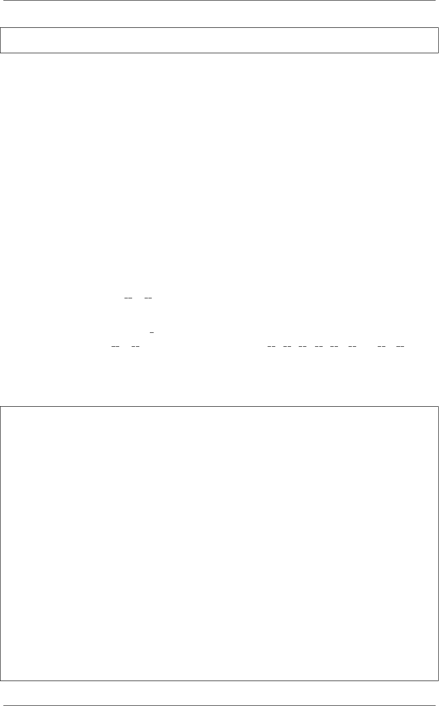

《Python Cookbook》第三版, Release 2.0.0
None
>>>
通过这里演示的弱引用技术，你会发现不再有循环引用问题了，一旦某个节点不被
使用了，垃圾回收器立即回收它。你还能参考 8.25 小节关于弱引用的另外一个例子。
10.24 8.24 让类支持比较操作
10.24.1 问题
你想让某个类的实例支持标准的比较运算 (比如>=,!=,<=,<等)，但是又不想去实
现那一大丢的特殊方法。
10.24.2 解决方案
Python 类对每个比较操作都需要实现一个特殊方法来支持。例如为了支持>=操
作符，你需要定义一个 ge () 方法。尽管定义一个方法没什么问题，但如果要你实
现所有可能的比较方法那就有点烦人了。
装饰器 functools.total ordering 就是用来简化这个处理的。使用它来装饰一个
来，你只需定义一个 eq () 方法，外加其他方法 ( lt , le , gt , or ge ) 中的
一个即可。然后装饰器会自动为你填充其它比较方法。
作为例子，我们构建一些房子，然后给它们增加一些房间，最后通过房子大小来比
较它们：
from functools import total_ordering
class Room:
def __init__(self, name, length, width):
self.name =name
self.length =length
self.width =width
self.square_feet =self.length *self.width
@total_ordering
class House:
def __init__(self, name, style):
self.name =name
self.style =style
self.rooms =list()
@property
def living_space_footage(self):
return sum(r.square_feet for rin self.rooms)
def add_room(self, room):
10.24. 8.24 让类支持比较操作 295